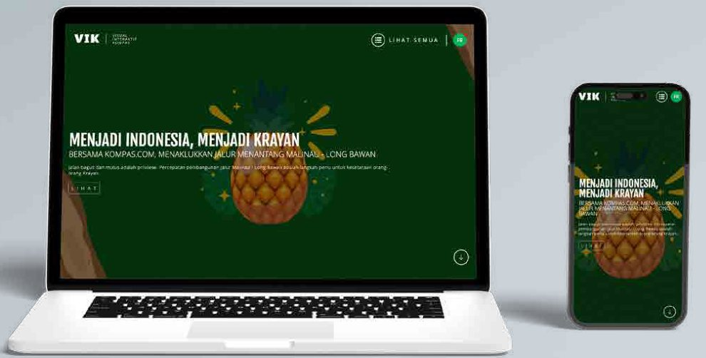
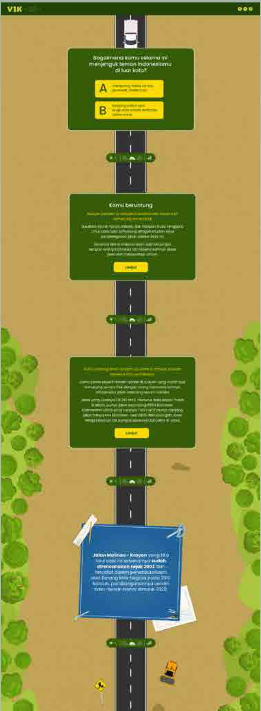
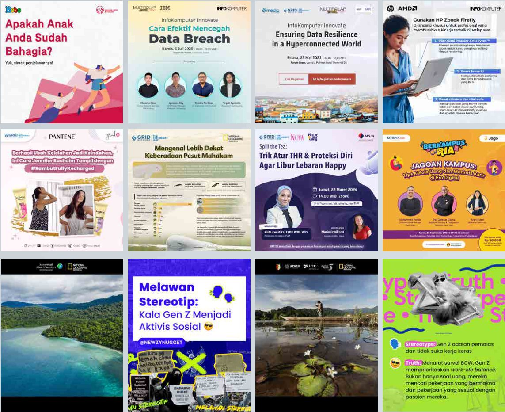
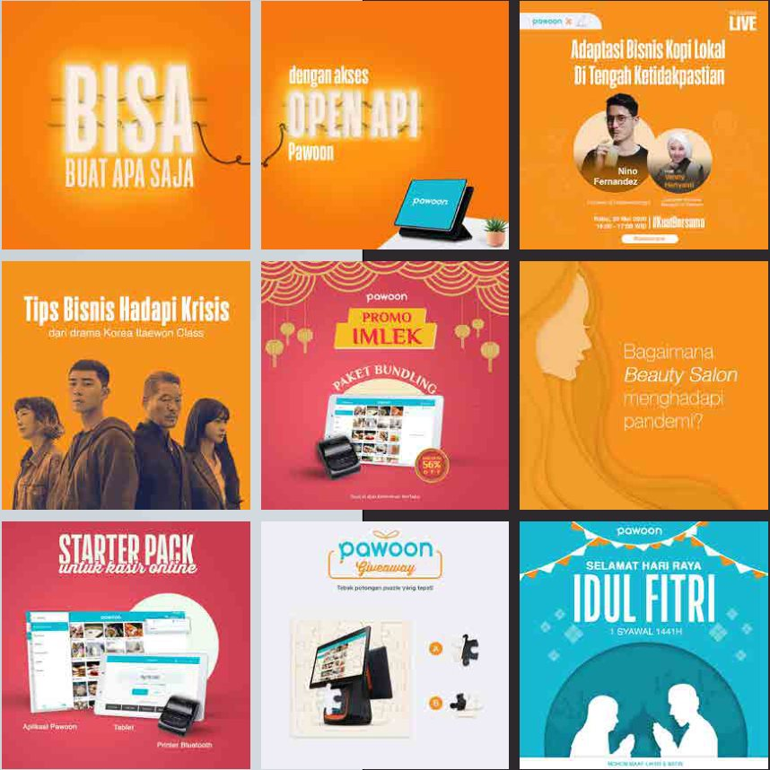
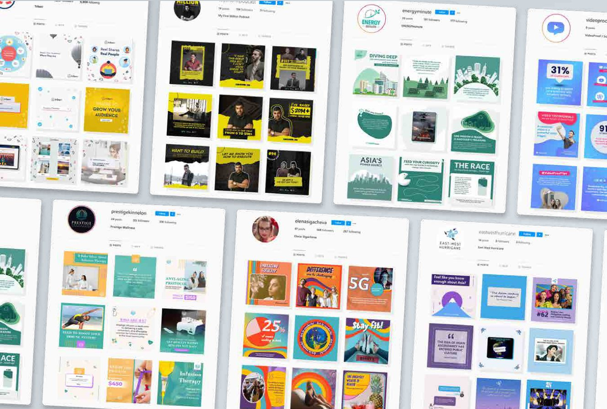

The concept
This interactive UI takes users on a journey along the road to the expedition in Krayan, where they make choices, unlock information and progress through milestones. It engages users with dynamic content and a sense of exploration, making complex topics easier to navigate in a fun, game-like experience.

Social media
Brand
The concept
Each design was made specifically for its campaign and adapted for Kompas Group’s social media.


Brand
The concept
Each design was made specifically for its brand and campaign. Some brands had no brand guideline, so through a KYC (Know Your Client) process each one was translated into a design with its own character.
